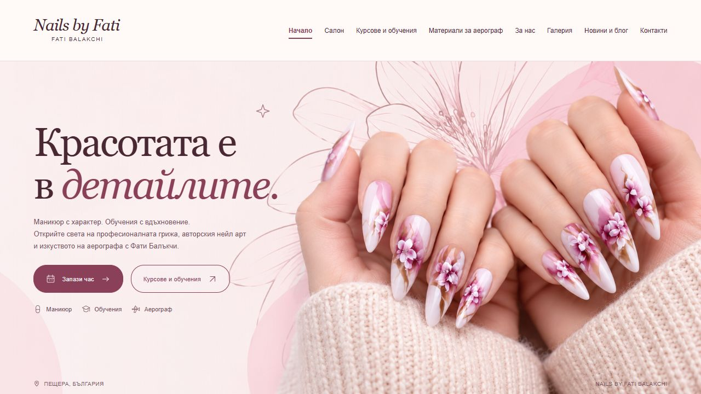
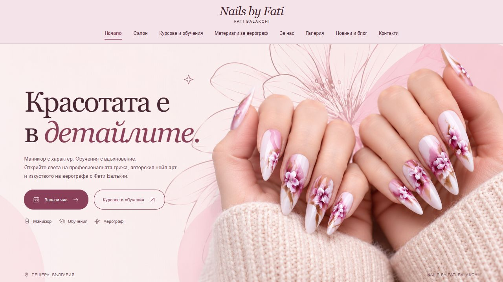
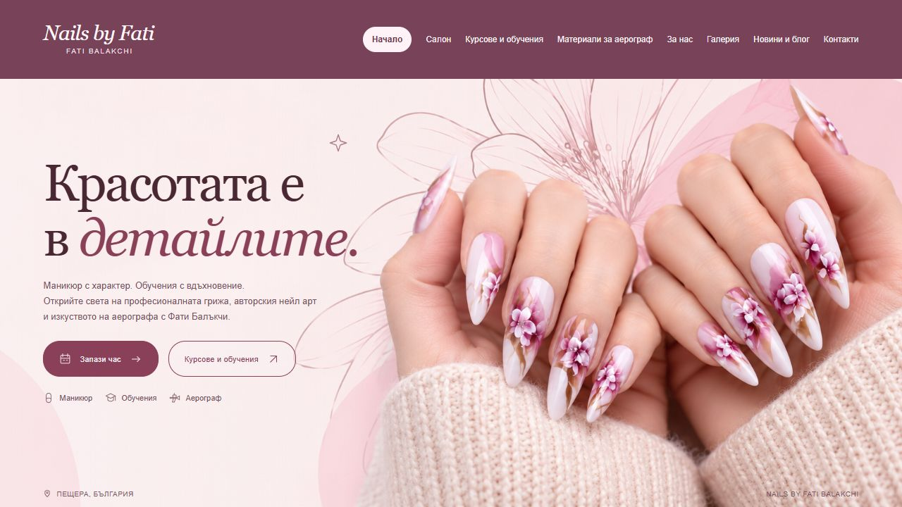

1. Porcelain Bar
Solid warm white with a clear burgundy active underline.

Solid backgrounds, larger menu text, and no floral drawing behind the navigation.
Open any option to see the full landing page. All landing-page controls remain disabled.
Solid warm white with a clear burgundy active underline.

An opaque white panel with a filled active tab.
A solid blush background with the logo above the menu.

A solid rosewood band with light text and an ivory active tab.
